This article is mainly going to be a collection of pictures of my various treks and the memories I have from them.
1. Har Ki Dun
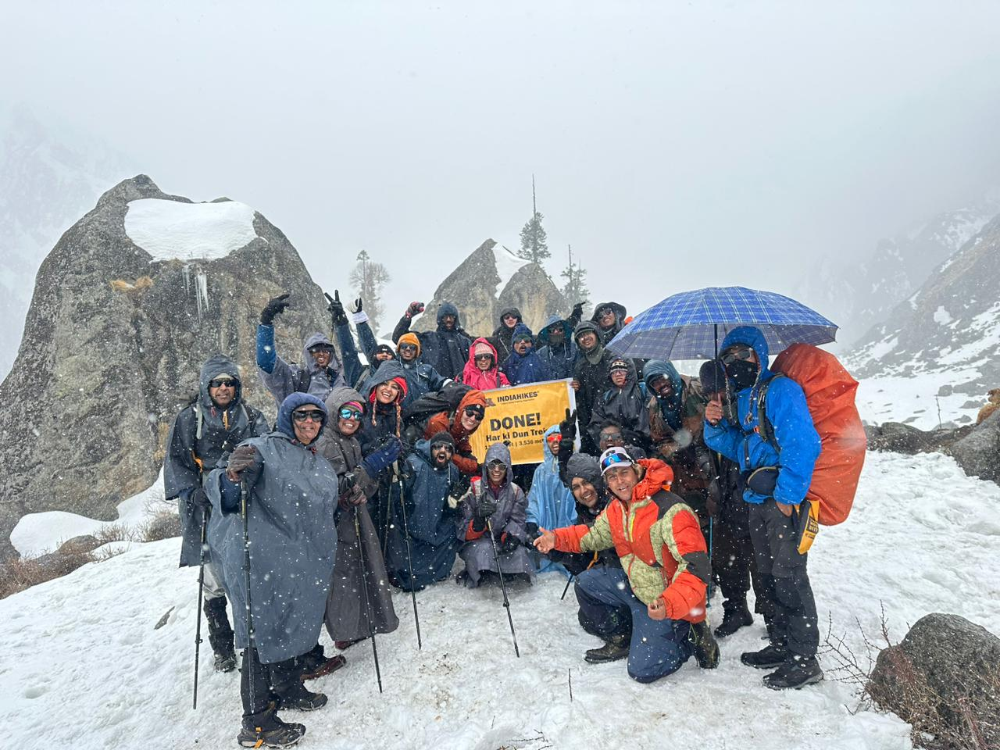Let me start with my absolute favorite trek, and mainly because of the people I met. There was a 6ft 4 tall dude from Mangalore who was my tent mate and we became fast friends mainly because he was my age, and he was pretty chill. He was taller than the Dutch couple that was there with us for the trek as well.
There were a group of 3 friends from Pune, who would always walk, sit, gossip together and giggle like they were high all the time. There was a 30yr old dude who worked in Sweden but he looked like he was 26 honestly, and he came with his 2 friends. There was a family from Gujarat and despite being a little old they completed the trek as well. There were two 30yr old women who were friends for a very long time it seems, and one solo Bangalore trekker and one old guy who has probably trekked more than half the treks on the IndiaHikes website.
The feeling you get from reaching the top together, despite all the hard climbing moments and the strict timelines on the final day, is unmatched.
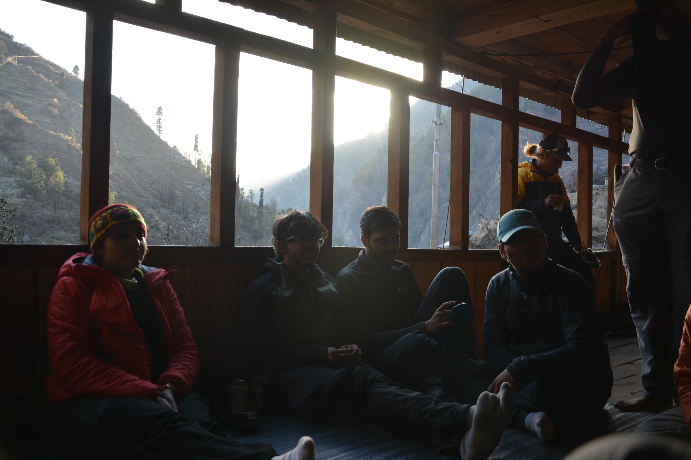Here you can see the three friends sitting down and chilling, this was one of the spots we camped at during our 2nd or 3rd day. We used to share stories, play games and have food after a difficult climb. The food by IndiaHikes is absolutely phenomenal.
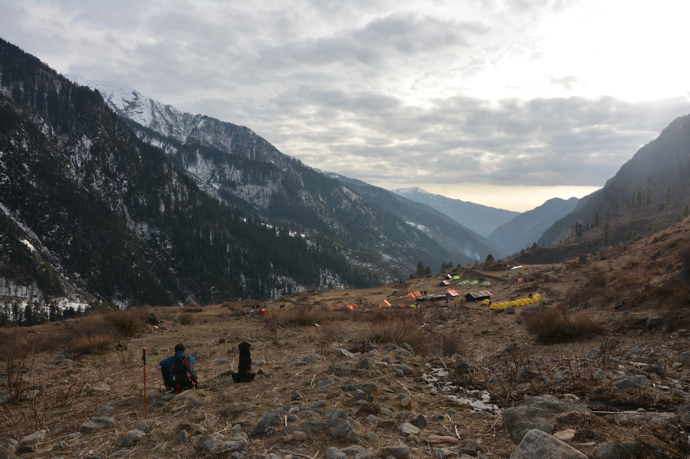This is me sitting next to a dog and admiring the grand view. Insane. And the inner peace you get from being there is just indescribable.
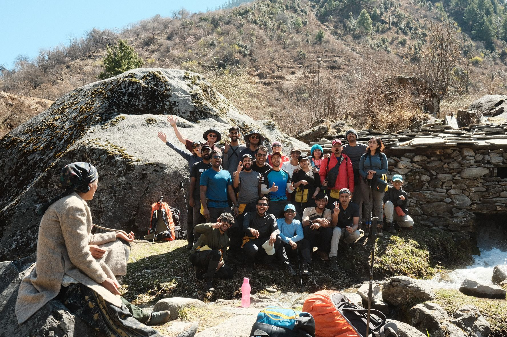On the left there are actually 2 local mountain-side ladies (that's why you see the third hand). This was the other major memorable thing during our trek. We had travelled during March, and celebrated Holi with the mountain-village folks. We danced with them, the little mountain-side kids asked the Dutch guy, Vincent, to bend down so he could mark the color on his head. We held hands with all the villagers and danced with them in a circle. The guy in the lead carries a hatchet signifying he is the leader, so all of us avoided him, yikes.
Overall an absolutely banger of a trek, I taught Vincent a few Hindi swear words, but I'm from Kerala myself. GG
2. Gosaikunda Lake
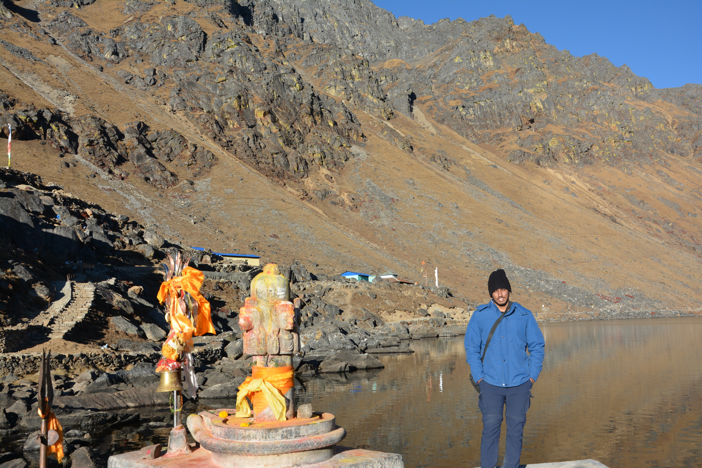This is me at the top of the trek, next to Gosaikunda Lake in Nepal. I travelled for 5 days with an actual sherpa guide. Two days of bus travel and base camp resting, 2 days going up, and 1 day going down the same distance (20km). My legs were shaking after the trek, I had to rest for a whole day in bed.
You can see how tired I look, I probably should've realized that I have oxygen issues at altitudes above 13,000 ft but this was my first trek. I had to take the diamox tablets as well to help breathe easier. But there was a 70 yr old lady from Italy chilling at the top and then I realized how weak I was.
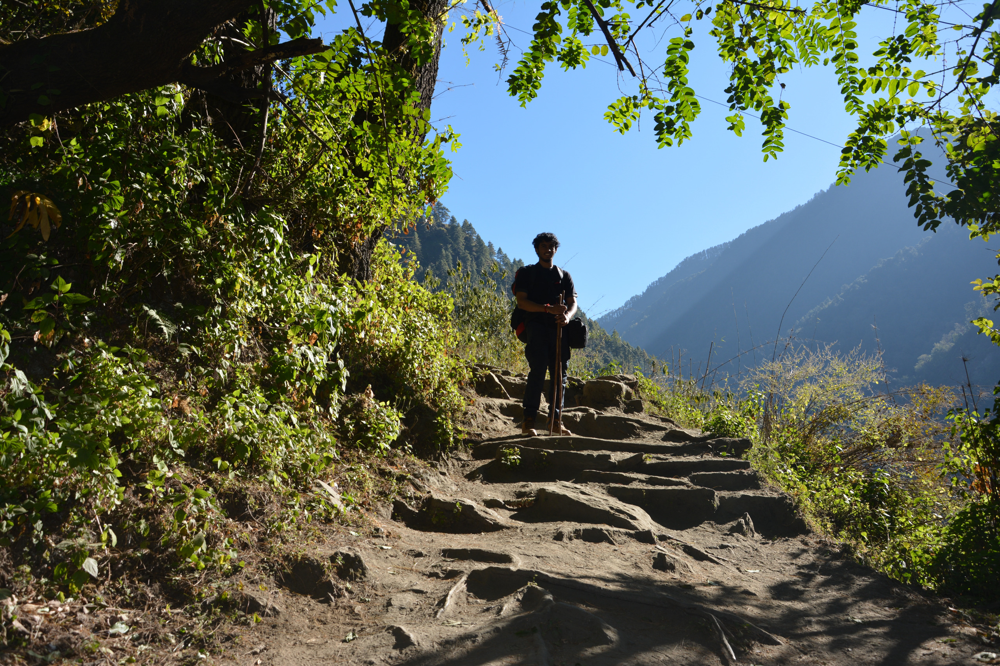This is me somewhere in the middle of the trek, the path is absolutely gorgeous. We were lying down in some farmlands' grass halfway as well, and the light mountain sun hitting your face is pure bliss.
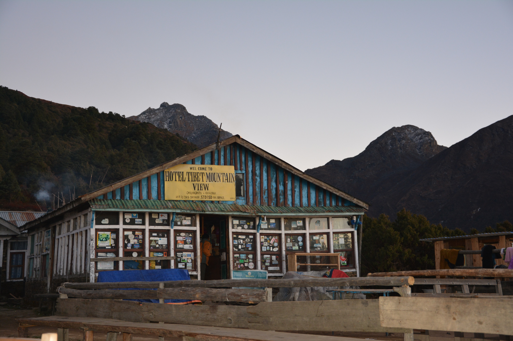In Nepal, when you are trekking, you will be resting at tea houses at the end of the day. These are little houses run by locals of the mountain, they have charcoal for warming up in the dining room, they have bathrooms to bathe as well, and they have yak cheese on their menu, god it's so good.
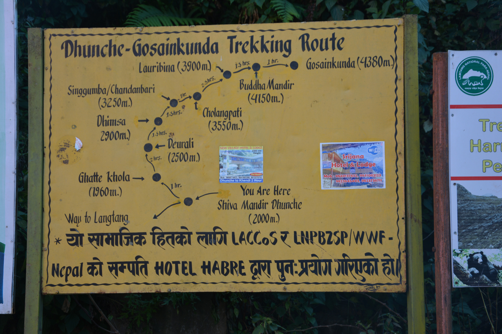This is a map of the trek we took, you can see we hit 4380m altitude at the top. It's pretty nice seeing these on the trail, you get a sense of how far you are and some nice conversations with your guide as well. I have a hand made wrist accessory made by him from tibetan stones, epic stuff.
Overall pretty good trek, this was my first solo adventure and I loved it.
3. Bhrigu Lake
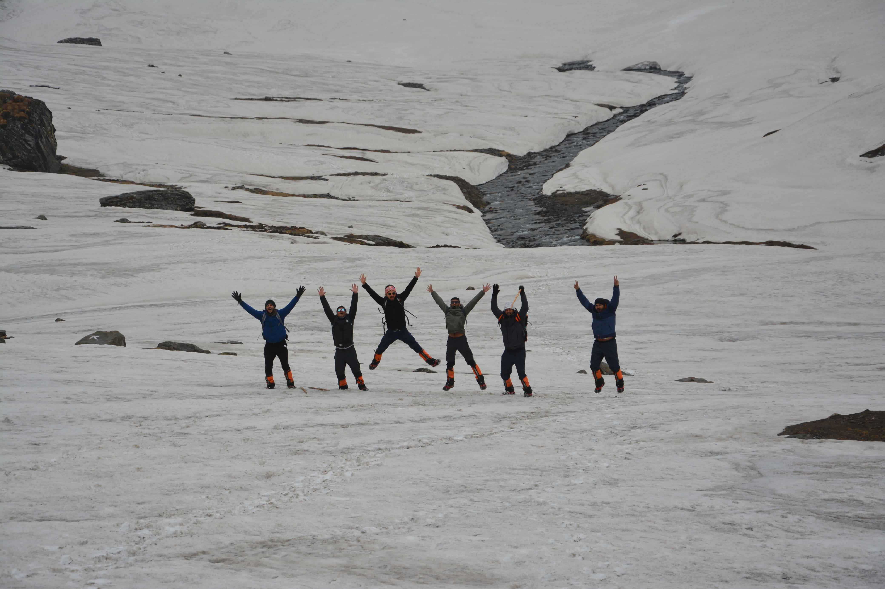The most surprising thing is my dad's 10+ year old Nikon camera still works at 13000ft+ in the Himalayas. This was us near the peak, we couldn't complete the top because of the heavy snowfall but we had fun sliding down the steep descent.
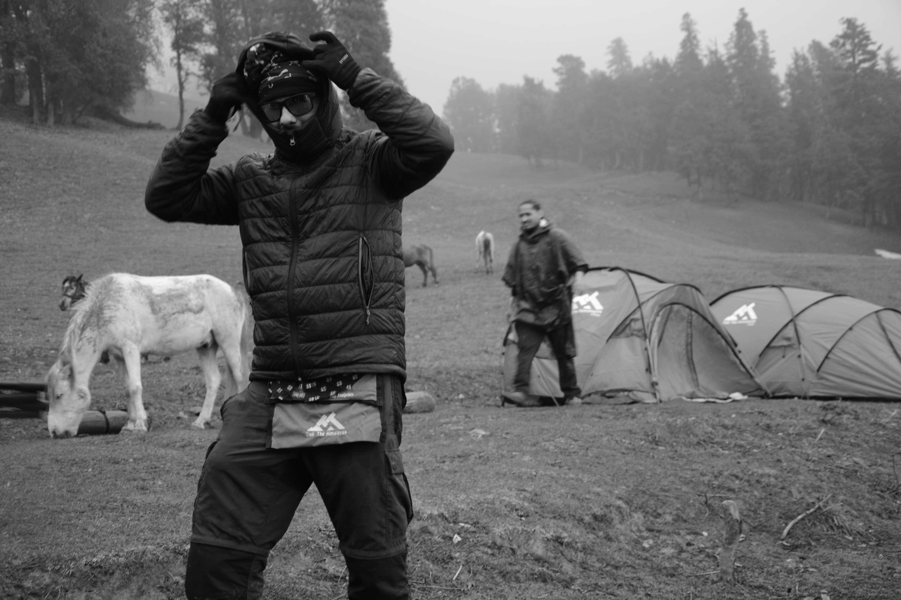I was messing around with my camera settings and accidentally took a black and white picture of my friend. Looks pretty sick, we were all from the same team in Slice office, and decided to go vacationing in Manali, Jispa, Rohtang, the whole circuit iykwim :).
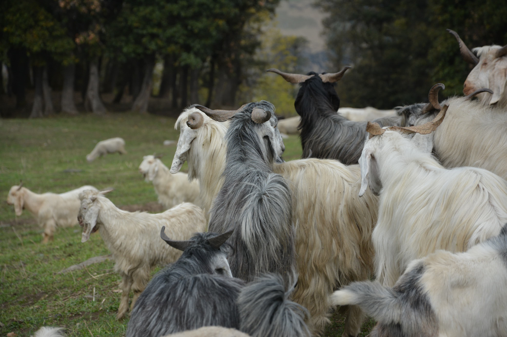We met a few mountain goats along the way, our guide told us one of them was named Ronaldo. Bruh.
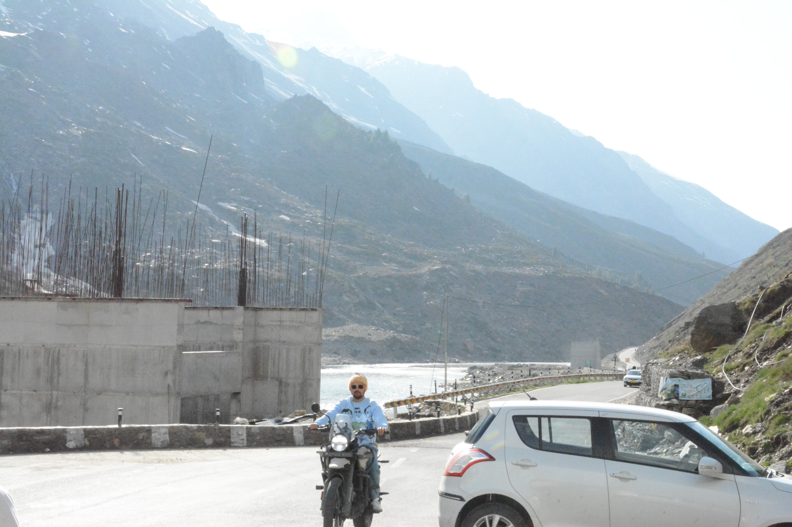All of us were taking turns driving the Royal Enfield Himalayan one of our friends rented. Surprisingly this is the principal engineer of my company and he has a house by the village in Uttarakhand, hope we visit it someday. Our gang had the bike ride of a lifetime. Some things are meant to be experienced. Driving on the Manali - Leh Highway is one of them.
Overall pretty great vacation/trek. We had planned one more trek but due to border disputes we had to come back early.
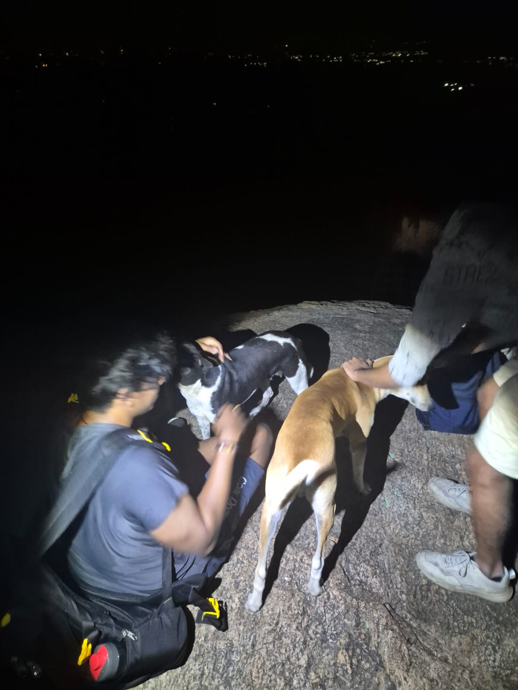
If you're still reading this, wow! This was mainly a photo dump session for me so I can clean my Google Drive. I'll probably go for more treks in the future once things become stable. Also this last image was during a 4AM trek in Bangalore.